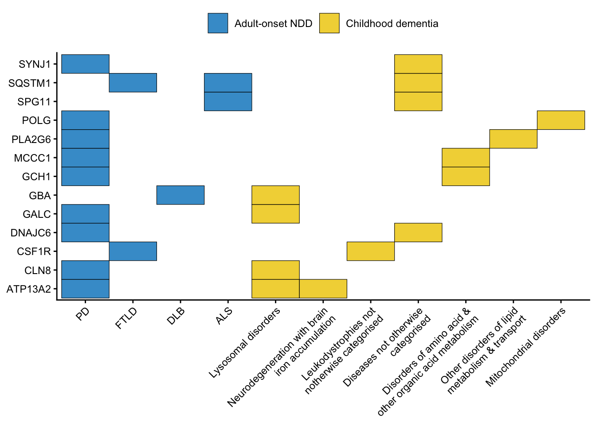

Last updated: 2026-06-11
Checks: 6 1
Knit directory:
2025_adultchilddementiagenetics/
This reproducible R Markdown analysis was created with workflowr (version 1.7.1). The Checks tab describes the reproducibility checks that were applied when the results were created. The Past versions tab lists the development history.
The R Markdown is untracked by Git. To know which version of the R
Markdown file created these results, you’ll want to first commit it to
the Git repo. If you’re still working on the analysis, you can ignore
this warning. When you’re finished, you can run
wflow_publish to commit the R Markdown file and build the
HTML.
Great job! The global environment was empty. Objects defined in the global environment can affect the analysis in your R Markdown file in unknown ways. For reproduciblity it’s best to always run the code in an empty environment.
The command set.seed(20250515) was run prior to running
the code in the R Markdown file. Setting a seed ensures that any results
that rely on randomness, e.g. subsampling or permutations, are
reproducible.
Great job! Recording the operating system, R version, and package versions is critical for reproducibility.
Nice! There were no cached chunks for this analysis, so you can be confident that you successfully produced the results during this run.
Great job! Using relative paths to the files within your workflowr project makes it easier to run your code on other machines.
Great! You are using Git for version control. Tracking code development and connecting the code version to the results is critical for reproducibility.
The results in this page were generated with repository version 4ae85a5. See the Past versions tab to see a history of the changes made to the R Markdown and HTML files.
Note that you need to be careful to ensure that all relevant files for
the analysis have been committed to Git prior to generating the results
(you can use wflow_publish or
wflow_git_commit). workflowr only checks the R Markdown
file, but you know if there are other scripts or data files that it
depends on. Below is the status of the Git repository when the results
were generated:
Ignored files:
Ignored: .DS_Store
Ignored: .Rhistory
Ignored: .Rproj.user/
Ignored: analysis/.DS_Store
Ignored: data/.DS_Store
Ignored: data/genesets/.DS_Store
Ignored: data/genesets/v1/.DS_Store
Ignored: data/genesets/v1/adultchild/.DS_Store
Ignored: data/genesets/v2/.DS_Store
Ignored: data/genesets/v2/Alternate_gene_lists_for_NetColoc_senstivity_analyses/.DS_Store
Ignored: data/genesets/v2/adultchild/.DS_Store
Ignored: data/genesets/v2/adultchildsubtypes/.DS_Store
Ignored: data/gtex/.DS_Store
Ignored: data/public data/
Ignored: data/results/.DS_Store
Ignored: data/results/AD only/.DS_Store
Ignored: data/results/CD subtypes and non neurodegen IEMs/.DS_Store
Ignored: data/results/adult and non-neurodegen IEMs/.DS_Store
Ignored: data/results/adultchildsubtypes v1/.DS_Store
Ignored: data/results/adultchildsubtypes v2/.DS_Store
Ignored: data/results/network_pathways/
Ignored: data/results/pan neurodegen analysis - adult v2/.DS_Store
Ignored: data/results/pan neurodegen analysis v1/.DS_Store
Ignored: output/.DS_Store
Ignored: output/DLB_snRNAseq/.DS_Store
Ignored: output/DLB_snRNAseq/figs/.DS_Store
Ignored: output/DLB_snRNAseq/figs/talk/.DS_Store
Ignored: output/figs/.DS_Store
Ignored: output/figs/paper/.DS_Store
Ignored: output/network_pathways/.DS_Store
Ignored: output/network_pathways/genesets_v1/.DS_Store
Ignored: output/network_pathways/genesets_v2/.DS_Store
Ignored: output/network_pathways_v2/.DS_Store
Ignored: output/network_pathways_v2/genesets_v1/.DS_Store
Ignored: output/network_pathways_v2/genesets_v2/.DS_Store
Ignored: output/plots/.DS_Store
Ignored: output/plots4ideasgrant/.DS_Store
Ignored: output/plots4paperv2/.DS_Store
Ignored: random/Alternate_gene_lists_for_NetColoc_senstivity_analyses/
Ignored: random/DARF Fellowship plots/
Ignored: random/Karissa_data_and_scripts_for_ANS_and_poster/
Ignored: random/UPDATED_MAGMA_for_Karissa/
Ignored: random/cytoscape/
Ignored: random/drugbank/
Ignored: random/for_william/
Ignored: random/scripts from deepthought/
Untracked files:
Untracked: analysis/01_overlap.rmd
Untracked: data/genesets/v3/
Untracked: data/results/AD only/AD_T1D/
Untracked: output/plots4publication/
Note that any generated files, e.g. HTML, png, CSS, etc., are not included in this status report because it is ok for generated content to have uncommitted changes.
There are no past versions. Publish this analysis with
wflow_publish() to start tracking its development.
[1] 13[1] 219[1] 233
$adult.all
[1] "Amyotrophic lateral sclerosis"
[2] "Pathways of neurodegeneration - multiple diseases"
[3] "Osteoclast differentiation"
[4] "Parkinson disease"
$CD.all
[1] "Lysosome biogenesis"
[2] "Peroxisome"
[3] "Glycosaminoglycan degradation"
[4] "Lipoic acid metabolism"
[5] "Other glycan degradation"
[6] "Valine, leucine and isoleucine degradation"
[7] "Sphingolipid metabolism"
[8] "Propanoate metabolism"
[9] "2-Oxocarboxylic acid metabolism"
[10] "Folate biosynthesis"
[11] "Cobalamin transport and metabolism"
[12] "Carbon metabolism"
[13] "Glyoxylate and dicarboxylate metabolism"
[14] "One carbon pool by folate"
[15] "Biosynthesis of amino acids"
[16] "Arginine biosynthesis"
[17] "Glycosphingolipid biosynthesis - ganglio series"
[18] "Glycine, serine and threonine metabolism"
[19] "Vitamin digestion and absorption"
[20] "Cytosolic DNA-sensing pathway"
[21] "Citrate cycle (TCA cycle)"
[22] "Glycosphingolipid biosynthesis - globo and isoglobo series"$adult.all
[1] "Amyotrophic lateral sclerosis"
[2] "Pathways of neurodegeneration - multiple diseases"
[3] "Osteoclast differentiation"
[4] "Parkinson disease"
$CD.all
[1] "Lysosome biogenesis"
[2] "Peroxisome"
[3] "Glycosaminoglycan degradation"
[4] "Lipoic acid metabolism"
[5] "Other glycan degradation"
[6] "Valine, leucine and isoleucine degradation"
[7] "Sphingolipid metabolism"
[8] "Propanoate metabolism"
[9] "2-Oxocarboxylic acid metabolism"
[10] "Folate biosynthesis"
[11] "Cobalamin transport and metabolism"
[12] "Carbon metabolism"
[13] "Glyoxylate and dicarboxylate metabolism"
[14] "One carbon pool by folate"
[15] "Biosynthesis of amino acids"
[16] "Arginine biosynthesis"
[17] "Glycosphingolipid biosynthesis - ganglio series"
[18] "Glycine, serine and threonine metabolism"
[19] "Vitamin digestion and absorption"
[20] "Cytosolic DNA-sensing pathway"
[21] "Citrate cycle (TCA cycle)"
[22] "Glycosphingolipid biosynthesis - globo and isoglobo series"character(0)character(0)$adult.all
[1] "Selective autophagy"
[2] "Autophagy"
[3] "Macroautophagy"
[4] "PINK1-PRKN Mediated Mitophagy"
[5] "Amyloid fiber formation"
[6] "Mitophagy"
[7] "Clathrin-mediated endocytosis"
[8] "Death Receptor Signaling"
[9] "Aggrephagy"
[10] "Regulation of TBK1, IKKε-mediated activation of IRF3, IRF7 upon TLR3 ligation"
[11] "Regulation of TNFR1 signaling"
[12] "trans-Golgi Network Vesicle Budding"
[13] "Synthesis of IP3 and IP4 in the cytosol"
[14] "TICAM1-dependent activation of IRF3/IRF7"
$CD.all
[1] "Diseases of metabolism"
[2] "Metabolism of water-soluble vitamins and cofactors"
[3] "Defects in vitamin and cofactor metabolism"
[4] "Metabolism of vitamins and cofactors"
[5] "Glycosphingolipid catabolism"
[6] "Mucopolysaccharidoses"
[7] "Class I peroxisomal membrane protein import"
[8] "Glycosphingolipid metabolism"
[9] "Metabolism of amino acids and derivatives"
[10] "Biotin transport and metabolism"
[11] "Diseases of carbohydrate metabolism"
[12] "Sphingolipid metabolism"
[13] "Protein localization"
[14] "Branched-chain amino acid catabolism"
[15] "Peroxisomal protein import"
[16] "HS-GAG degradation"
[17] "Defects in cobalamin (B12) metabolism"
[18] "Regulation of pyruvate dehydrogenase (PDH) complex"
[19] "Cobalamin (Cbl, vitamin B12) transport and metabolism"
[20] "Heparan sulfate/heparin (HS-GAG) metabolism"
[21] "Glycosaminoglycan metabolism"
[22] "CS/DS degradation"
[23] "E3 ubiquitin ligases ubiquitinate target proteins"
[24] "Keratan sulfate degradation"
[25] "Glyoxylate metabolism and glycine degradation"
[26] "Regulation of pyruvate metabolism"
[27] "Sialic acid metabolism"
[28] "Diseases associated with N-glycosylation of proteins"
[29] "Metabolism of carbohydrates"
[30] "Vitamin B5 (pantothenate) metabolism"
[31] "Biosynthesis of the N-glycan precursor (dolichol lipid-linked oligosaccharide, LLO) and transfer to a nascent protein"
[32] "Protein lipoylation"
[33] "Signaling by Retinoic Acid"
[34] "Pyruvate metabolism"
[35] "Synthesis of substrates in N-glycan biosythesis"
[36] "Hyaluronan uptake and degradation"
[37] "Beta-oxidation of very long chain fatty acids"
[38] "Pexophagy"
[39] "Protein ubiquitination"
[40] "RNA Polymerase III Transcription Initiation From Type 2 Promoter"
[41] "RNA Polymerase I Transcription Initiation"
[42] "Sulfur amino acid metabolism"
[43] "RNA Polymerase III Transcription Initiation From Type 1 Promoter"
[44] "RNA Polymerase III Transcription Initiation From Type 3 Promoter"
[45] "alpha-linolenic (omega3) and linoleic (omega6) acid metabolism"
[46] "alpha-linolenic acid (ALA) metabolism"
[47] "RNA Polymerase I Transcription Termination"
[48] "RNA Polymerase I Promoter Clearance"
[49] "RNA Polymerase I Transcription"
[50] "RNA Polymerase I Promoter Escape"
[51] "Hyaluronan metabolism"
[52] "RNA Polymerase III Transcription Initiation"
[53] "Ion transport by P-type ATPases"
[54] "Keratan sulfate/keratin metabolism"
[55] "ABC transporters in lipid homeostasis"
[56] "RNA Polymerase III Chain Elongation"
[57] "Dual incision in TC-NER"
[58] "RNA Polymerase III Transcription"
[59] "RNA Polymerase III Abortive And Retractive Initiation" character(0)
R version 4.4.2 (2024-10-31)
Platform: aarch64-apple-darwin20
Running under: macOS Sequoia 15.4.1
Matrix products: default
BLAS: /Library/Frameworks/R.framework/Versions/4.4-arm64/Resources/lib/libRblas.0.dylib
LAPACK: /Library/Frameworks/R.framework/Versions/4.4-arm64/Resources/lib/libRlapack.dylib; LAPACK version 3.12.0
locale:
[1] en_US.UTF-8/en_US.UTF-8/en_US.UTF-8/C/en_US.UTF-8/en_US.UTF-8
time zone: Australia/Adelaide
tzcode source: internal
attached base packages:
[1] stats4 stats graphics grDevices utils datasets methods
[8] base
other attached packages:
[1] DOSE_4.0.1 ReactomePA_1.50.0 gprofiler2_0.2.3
[4] clusterProfiler_4.14.6 org.Hs.eg.db_3.20.0 AnnotationDbi_1.68.0
[7] IRanges_2.40.1 S4Vectors_0.44.0 Biobase_2.66.0
[10] BiocGenerics_0.52.0 patchwork_1.3.2 readxl_1.4.5
[13] magrittr_2.0.3 lubridate_1.9.4 forcats_1.0.0
[16] stringr_1.5.1 dplyr_1.1.4 purrr_1.1.0
[19] readr_2.1.5 tidyr_1.3.1 tibble_3.3.0
[22] ggplot2_4.0.0 tidyverse_2.0.0
loaded via a namespace (and not attached):
[1] RColorBrewer_1.1-3 rstudioapi_0.17.1 jsonlite_2.0.0
[4] ggtangle_0.0.7 farver_2.1.2 rmarkdown_2.29
[7] fs_1.6.6 zlibbioc_1.52.0 vctrs_0.6.5
[10] memoise_2.0.1 ggtree_3.14.0 htmltools_0.5.8.1
[13] cellranger_1.1.0 gridGraphics_0.5-1 sass_0.4.10
[16] bslib_0.9.0 htmlwidgets_1.6.4 plyr_1.8.9
[19] plotly_4.11.0 cachem_1.1.0 igraph_2.1.4
[22] lifecycle_1.0.4 pkgconfig_2.0.3 Matrix_1.7-3
[25] R6_2.6.1 fastmap_1.2.0 gson_0.1.0
[28] GenomeInfoDbData_1.2.13 digest_0.6.37 aplot_0.2.8
[31] enrichplot_1.26.6 colorspace_2.1-1 rprojroot_2.1.0
[34] RSQLite_2.4.2 timechange_0.3.0 httr_1.4.7
[37] polyclip_1.10-7 compiler_4.4.2 bit64_4.6.0-1
[40] withr_3.0.2 graphite_1.52.0 S7_0.2.0
[43] BiocParallel_1.40.2 viridis_0.6.5 DBI_1.2.3
[46] ggforce_0.5.0 R.utils_2.13.0 MASS_7.3-65
[49] rappdirs_0.3.3 tools_4.4.2 ape_5.8-1
[52] httpuv_1.6.16 R.oo_1.27.1 glue_1.8.0
[55] nlme_3.1-168 GOSemSim_2.32.0 promises_1.3.3
[58] grid_4.4.2 reshape2_1.4.4 fgsea_1.32.4
[61] generics_0.1.4 gtable_0.3.6 tzdb_0.5.0
[64] R.methodsS3_1.8.2 data.table_1.17.8 hms_1.1.3
[67] tidygraph_1.3.1 XVector_0.46.0 ggrepel_0.9.6
[70] pillar_1.11.0 vroom_1.6.5 yulab.utils_0.2.0
[73] later_1.4.2 splines_4.4.2 tweenr_2.0.3
[76] treeio_1.30.0 lattice_0.22-7 bit_4.6.0
[79] tidyselect_1.2.1 GO.db_3.20.0 Biostrings_2.74.1
[82] reactome.db_1.89.0 knitr_1.50 git2r_0.36.2
[85] gridExtra_2.3 xfun_0.56 graphlayouts_1.2.2
[88] stringi_1.8.7 UCSC.utils_1.2.0 workflowr_1.7.1
[91] lazyeval_0.2.2 ggfun_0.2.0 yaml_2.3.10
[94] evaluate_1.0.4 codetools_0.2-20 ggraph_2.2.1
[97] qvalue_2.38.0 graph_1.84.1 ggplotify_0.1.2
[100] cli_3.6.5 jquerylib_0.1.4 Rcpp_1.1.0
[103] GenomeInfoDb_1.42.3 png_0.1-8 parallel_4.4.2
[106] blob_1.2.4 viridisLite_0.4.2 tidytree_0.4.6
[109] scales_1.4.0 crayon_1.5.3 rlang_1.1.6
[112] cowplot_1.2.0 fastmatch_1.1-6 KEGGREST_1.46.0